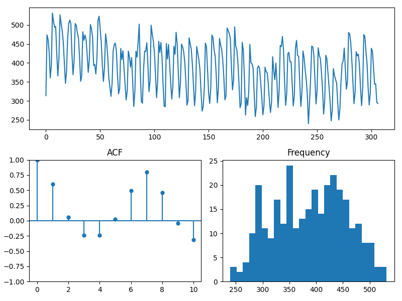
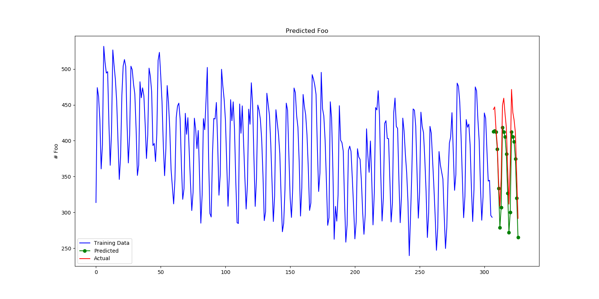

Note
Go to the end to download the full example code.
Modeling quasi-seasonal trends with date features
Some trends are common enough to appear seasonal, yet sporadic enough that approaching them from a seasonal perspective may not be valid. An example of this is the “end-of-the-month” effect. In this example, we’ll explore how we can create meaningful features that express seasonal trends without needing to fit a seasonal model.
- 
- 
pmdarima version: 0.0.0
/usr/local/lib/python3.11/site-packages/pmdarima/utils/visualization.py:220: FutureWarning: the 'unbiased' keyword is deprecated, use 'adjusted' instead.
res = tsaplots.plot_acf(
Head of generated X features:
DATE-WEEKDAY-0 DATE-WEEKDAY-1 ... DATE-WEEKDAY-6 DATE-DAY-OF-MONTH
0 0 1 ... 0 1
1 0 0 ... 0 2
2 0 0 ... 0 3
3 0 0 ... 0 4
4 0 0 ... 0 5
[5 rows x 8 columns]
Performing stepwise search to minimize aic
Near non-invertible roots for order (2, 1, 2)(0, 0, 0, 0); setting score to inf (at least one inverse root too close to the border of the unit circle: 0.998)
ARIMA(2,1,2)(0,0,0)[0] intercept : AIC=inf, Time=2.99 sec
ARIMA(0,1,0)(0,0,0)[0] intercept : AIC=2864.731, Time=0.07 sec
First viable model found (2864.731)
ARIMA(1,1,0)(0,0,0)[0] intercept : AIC=2861.910, Time=1.21 sec
New best model found (2861.910 < 2864.731)
ARIMA(0,1,1)(0,0,0)[0] intercept : AIC=2859.092, Time=1.80 sec
New best model found (2859.092 < 2861.910)
ARIMA(0,1,0)(0,0,0)[0] : AIC=2862.772, Time=0.17 sec
Near non-invertible roots for order (1, 1, 1)(0, 0, 0, 0); setting score to inf (at least one inverse root too close to the border of the unit circle: 0.999)
ARIMA(1,1,1)(0,0,0)[0] intercept : AIC=inf, Time=2.73 sec
ARIMA(0,1,2)(0,0,0)[0] intercept : AIC=2847.648, Time=2.71 sec
New best model found (2847.648 < 2859.092)
Near non-invertible roots for order (1, 1, 2)(0, 0, 0, 0); setting score to inf (at least one inverse root too close to the border of the unit circle: 0.997)
ARIMA(1,1,2)(0,0,0)[0] intercept : AIC=inf, Time=3.21 sec
ARIMA(0,1,3)(0,0,0)[0] intercept : AIC=2844.490, Time=3.09 sec
New best model found (2844.490 < 2847.648)
Near non-invertible roots for order (1, 1, 3)(0, 0, 0, 0); setting score to inf (at least one inverse root too close to the border of the unit circle: 0.998)
ARIMA(1,1,3)(0,0,0)[0] intercept : AIC=inf, Time=3.71 sec
ARIMA(0,1,4)(0,0,0)[0] intercept : AIC=2844.554, Time=3.75 sec
ARIMA(1,1,4)(0,0,0)[0] intercept : AIC=2846.569, Time=3.85 sec
ARIMA(0,1,3)(0,0,0)[0] : AIC=2842.499, Time=2.60 sec
New best model found (2842.499 < 2844.490)
ARIMA(0,1,2)(0,0,0)[0] : AIC=2845.649, Time=2.25 sec
ARIMA(1,1,3)(0,0,0)[0] : AIC=2840.067, Time=3.33 sec
New best model found (2840.067 < 2842.499)
ARIMA(1,1,2)(0,0,0)[0] : AIC=2839.103, Time=2.10 sec
New best model found (2839.103 < 2840.067)
ARIMA(1,1,1)(0,0,0)[0] : AIC=2837.109, Time=1.40 sec
New best model found (2837.109 < 2839.103)
ARIMA(0,1,1)(0,0,0)[0] : AIC=2857.120, Time=0.98 sec
ARIMA(1,1,0)(0,0,0)[0] : AIC=2859.946, Time=1.02 sec
ARIMA(2,1,1)(0,0,0)[0] : AIC=2839.104, Time=1.60 sec
ARIMA(2,1,0)(0,0,0)[0] : AIC=2854.994, Time=2.20 sec
ARIMA(2,1,2)(0,0,0)[0] : AIC=2840.740, Time=2.62 sec
Best model: ARIMA(1,1,1)(0,0,0)[0]
Total fit time: 49.390 seconds
print(__doc__)
# Author: Taylor Smith <taylor.smith@alkaline-ml.com>
import pmdarima as pm
from pmdarima import arima
from pmdarima import model_selection
from pmdarima import pipeline
from pmdarima import preprocessing
from pmdarima.datasets._base import load_date_example
import numpy as np
from matplotlib import pyplot as plt
print(f"pmdarima version: {pm.__version__}")
# Load the data and split it into separate pieces
y, X = load_date_example()
y_train, y_test, X_train, X_test = \
model_selection.train_test_split(y, X, test_size=20)
# We can examine traits about the time series:
pm.tsdisplay(y_train, lag_max=10)
# We can see the ACF increases and decreases rather rapidly, which means we may
# need some differencing. There also does not appear to be an obvious seasonal
# trend.
n_diffs = arima.ndiffs(y_train, max_d=5)
# Here's what the featurizer will create for us:
date_feat = preprocessing.DateFeaturizer(
column_name="date", # the name of the date feature in the X matrix
with_day_of_week=True,
with_day_of_month=True)
_, X_train_feats = date_feat.fit_transform(y_train, X_train)
print(f"Head of generated X features:\n{repr(X_train_feats.head())}")
# We can plug this X featurizer into a pipeline:
pipe = pipeline.Pipeline([
('date', date_feat),
('arima', arima.AutoARIMA(d=n_diffs,
trace=3,
stepwise=True,
suppress_warnings=True,
seasonal=False))
])
pipe.fit(y_train, X_train)
# Plot our forecasts
forecasts = pipe.predict(X=X_test)
fig = plt.figure(figsize=(16, 8))
ax = fig.add_subplot(1, 1, 1)
n_train = y_train.shape[0]
x = np.arange(n_train + forecasts.shape[0])
ax.plot(x[:n_train], y_train, color='blue', label='Training Data')
ax.plot(x[n_train:], forecasts, color='green', marker='o',
label='Predicted')
ax.plot(x[n_train:], y_test, color='red', label='Actual')
ax.legend(loc='lower left', borderaxespad=0.5)
ax.set_title('Predicted Foo')
ax.set_ylabel('# Foo')
plt.show()
# What next? Try combining different featurizers in your pipeline to enhance
# a model's predictive power.
Total running time of the script: (0 minutes 49.879 seconds)